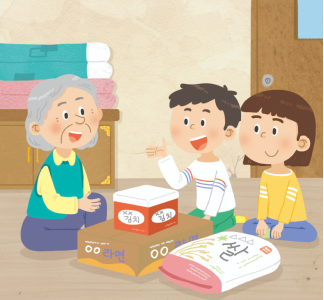

1번
다음 ㉠과 ㉡에 들어갈 알맞은 말을 각각 선택하세요.

시아는 학교에서 인권이란 ㉠
선택하세요.
모든 사람이 각자 노력을 통해 얻을 수 있는 권리
모든 사람이 인간다운 삶을 살아가기 위해 누려야 할 권리
를 의미한다는 것을 배웠습니다. 평소 시아가 자주 했던
㉡
선택하세요.
몸이 불편한 친구를 위해 급식을 대신 받아주는
버스에서 몸이 무거운 임산부를 위해 자리를 양보하는
혼자 살아서 외로워하시는 옆 집 할머니 댁을 방문하는
것 역시 일상생활 속에서 인권을 존중하는 모습이라는 것을 알았습니다.